探
本節探究 進實驗室，先想安全還是先拿藥品？
重點概覽：安全守則 ｜ 器材操作 ｜ 控制變因法
桌上有濃硫酸、酒精燈和量筒。先預測：一進門該先開窗，還是先拿藥品？實驗要公平，是一次改很多條件，還是只改一件？下面三站找證據。
探究問題：進實驗室，先想安全還是先拿藥品？
重點概覽：安全守則 ｜ 器材操作 ｜ 控制變因法
桌上有濃硫酸、酒精燈和量筒。先預測：一進門該先開窗，還是先拿藥品？實驗要公平，是一次改很多條件，還是只改一件？下面三站找證據。
實驗前、實驗時、實驗後
探究線索：一進實驗室，為什麼要先開窗？剩餘藥品可以直接倒進水槽沖掉嗎？
實驗室有藥品與火源，必須遵守安全守則。穿實驗衣或長袖、戴手套與護目鏡；聽完老師說明，得到許可後才領器材與藥品。
| 階段 | 安全守則 |
|---|---|
| 實驗前 |
1. 穿實驗衣或長袖衣服，戴手套、護目鏡。 2. 進入後先 保持 。 3. 確認逃生路線，以及滅火器、沖眼器的位置與用法。 4. 聽老師說明，得到指示後才領取器材與藥品。 |
| 實驗時 |
1. 依正確步驟操作器材。 2. 嚴禁 、追逐及嬉戲。 3. 不可用口嘗試任何藥品。 4. 皮膚或眼睛接觸藥品，立刻用 或以 沖洗。 |
| 實驗後 |
1. 清洗器材並放回原位。 2. 廢棄物與剩餘藥品不可帶出，應 。 3. 擦淨桌面、椅子歸位，關窗關燈。 |
1. (
) 實驗剩餘的藥品應倒入水槽，再用大量清水沖掉。
訂正：
2. (
) 皮膚不小心碰到藥品，應直接到健康中心。
訂正：
1. 關於實驗室安全守則，下列何者錯誤？（ ）（A）進入後先開窗保持通風 （B）嚴禁飲食、追逐及嬉戲 （C）老師說明前先搬弄器材熟悉 （D）實驗前確認消防設施位置與用法
2. 文同做實驗時打翻濃硫酸燒杯，酸濺到手背。正確的第一步是？（ ）（A）先到健康中心 （B）打 110 （C）先查濃硫酸性質再決定 （D）立刻用大量清水沖洗並報告老師
這一站的證據：進實驗室先通風、先聽老師；濺到藥品先大量沖水；剩餘藥品分類集中。下一站問：酒精燈、量筒、濃酸，為什麼不能隨便用？
酒精燈、加熱、量筒與稀釋
探究線索：酒精燈可以用另一盞正在燒的燈去點嗎？量筒可以拿來配溶液、直接加熱嗎？
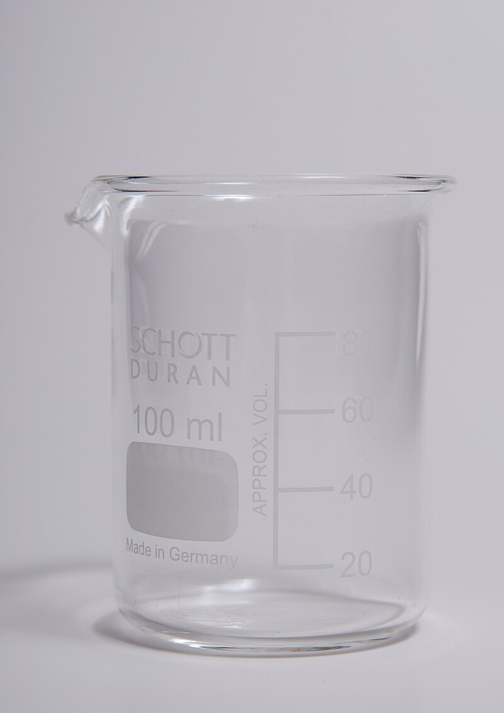
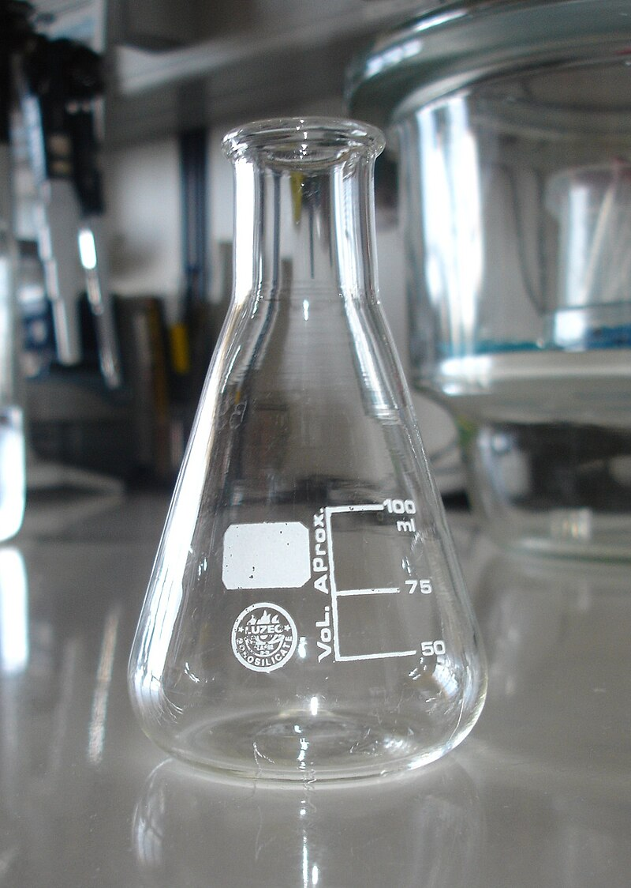
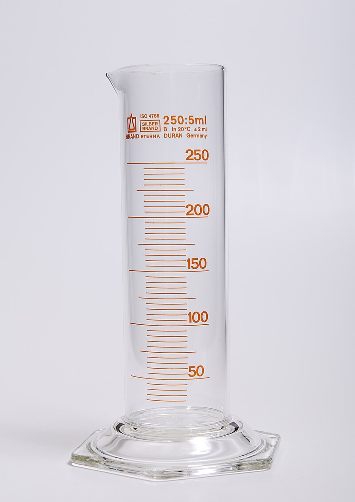
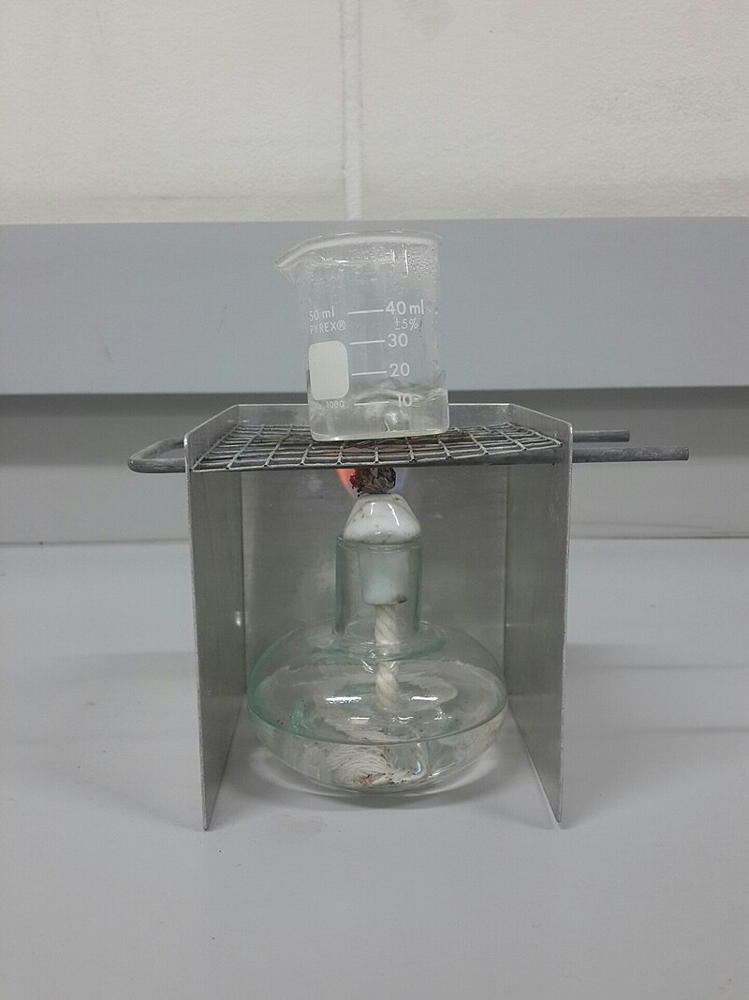
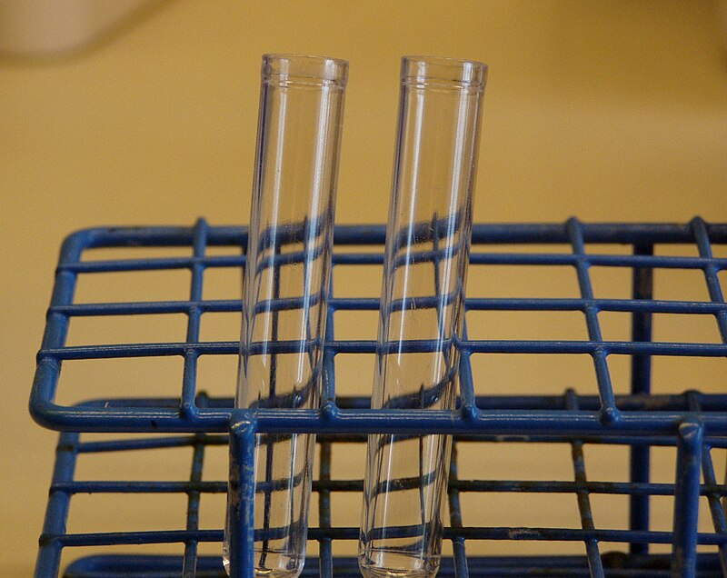
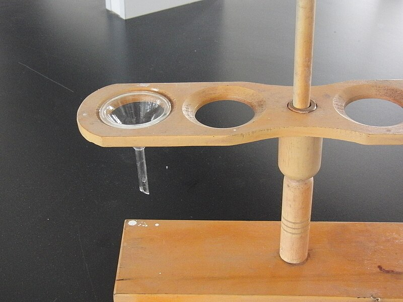
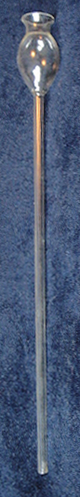
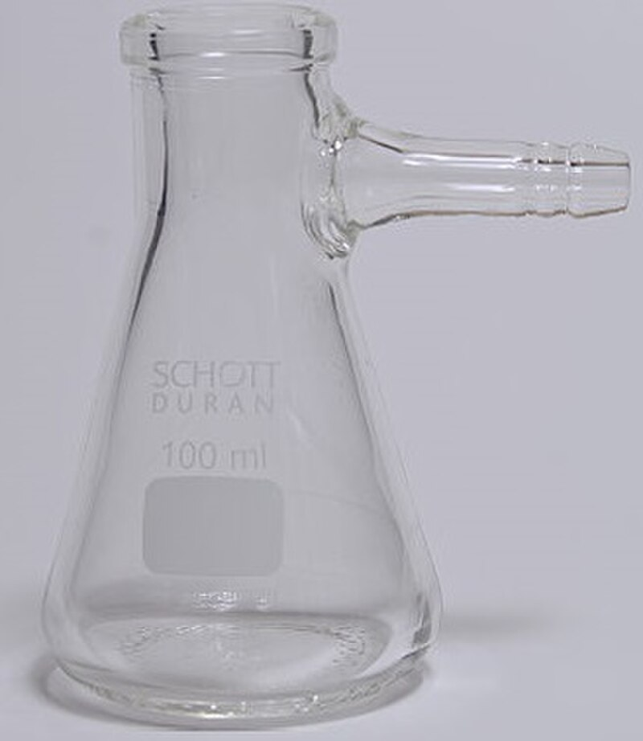
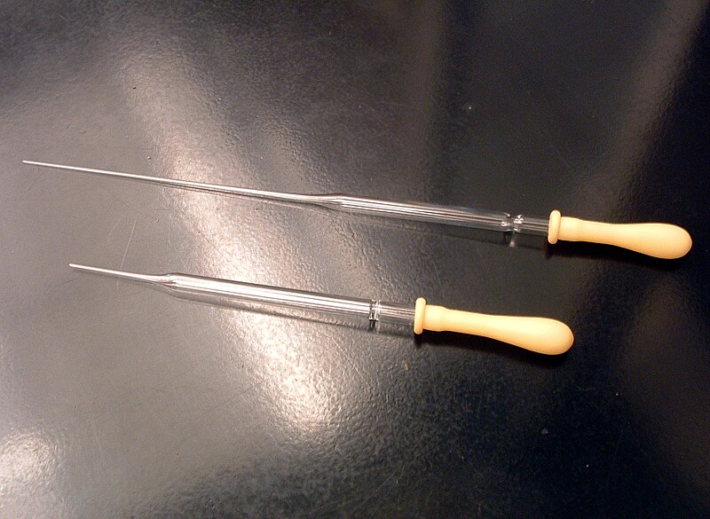
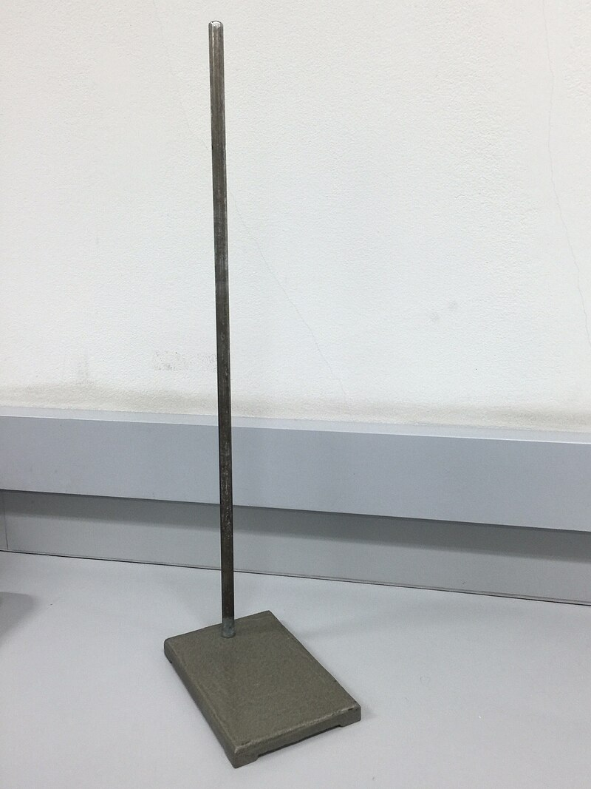
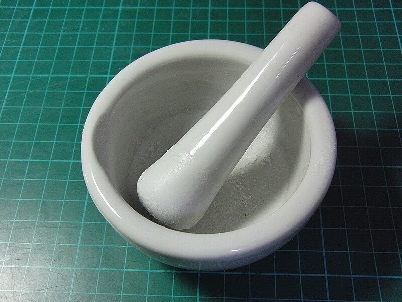
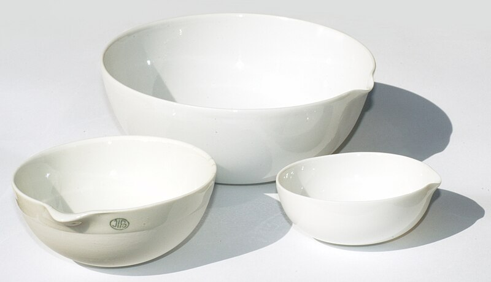
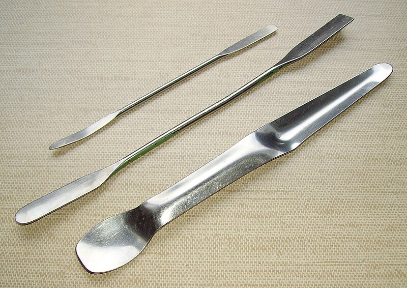
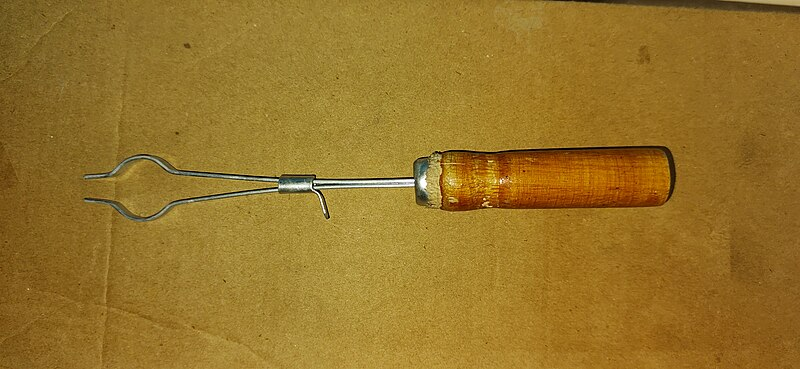
先認形狀：燒杯口大、錐形瓶口小底大、量筒細長有刻度；吸濾瓶多了側管，不要和錐形瓶搞混。三腳架見酒精燈那張。照片：Wikimedia Commons（CC BY-SA）
其他加熱設備：電子點火式本生燈以瓦斯為燃料，溫度可達 1000°C 以上。加熱板可均勻加熱並提供穩定溫度，不可用於大量易揮發或可燃物。
測量 ：視線對齊水面中央 （凹面）。
測量 ：視線對齊液面中央 （凸面）。
稀釋濃酸或強鹼：將濃酸或強鹼沿玻璃棒緩緩 ，並不斷攪拌。稀釋會放出熱量；若把水加入酸中，局部過熱會使酸液飛濺。
視線與讀數點齊平；稀釋時「酸入水」，不是「水入酸」
觀察藥品：不可把眼、口、鼻靠近容器口。嗅聞氣味用 。有毒或揮發性藥品應在 內進行。
1. ( ) 使用有毒藥品應在通風櫥內。
2. (
) 酒精燈內酒精必須加滿才能使用。
訂正：
3. (
) 測量水銀體積時，視線應對齊液面中央最低處。
訂正：
1. 使用陶瓷纖維網的主要目的？（ ）
2. 下列哪個器材不可加熱？（ ）（A）試管 （B）燒杯 （C）量筒 （D）錐形瓶
3. 想量取 20 mL 稀硫酸，應選？（ ）
4. 關於酒精燈，何者正確？（ ）
5. 稀釋濃硫酸的正確操作？（ ）
這一站的證據：每種器材有固定用法；酒精燈、量筒、稀釋濃酸都不能「順便」。下一站問：實驗要公平，一次能改幾個條件？
操縱、控制、應變
探究線索：想知道「加熱時間會不會讓水溫升更高」，實驗組和對照組可以同時改時間又改水量嗎？為什麼？
要了解某一因素對事件的影響，採用的實驗方法叫做 。
1. (
) 實驗中的「變因」專指實驗組和對照組不同的因素。
訂正：
2. (
) 一個實驗只有一個操縱變因和一個控制變因。
訂正：
3. (
) 應變變因是控制變因對事件造成的結果。
訂正：
這一站的證據：公平的實驗一次只改一個操縱變因，其餘當控制變因，看應變變因怎麼變。收成速記後，就能回答本節問題。
安全、器材、變因三句話
證據卡：這些句子用來支撐下面的「本節主張」。先對照守則與操作，再決定你同不同意。
先安全、會操作，實驗才公平
進實驗室要先想安全：開窗通風、聽老師、禁止飲食；藥品碰到皮膚先大量沖水再報告，剩餘藥品分類集中處理。每種器材有固定用法，酒精燈、量筒和稀釋濃酸都不能隨便做。要知道某一因素的影響，一次只改一個操縱變因，其餘保持相同，再看應變變因。
下一站要問：量一次就準嗎？最後那位數字是量出來的還是估的？ 先用下面練習檢驗你的主張。
基本題對主張；進階題對易錯
檢驗主張：做題時對照本節問題——進實驗室，先想安全還是先拿藥品？
1. 進入實驗室後先 保持通風。
2. 剩餘藥品要 。
3. 酒精燈熄滅用 。
4. 量筒不可 。
5. 操縱變因通常只有 。
1. 酸濺到手先 。
2. 水的讀數看液面 。
3. 稀釋濃酸要把酸加入 。
4. 應變變因是 。
5. 嗅聞藥品用 。